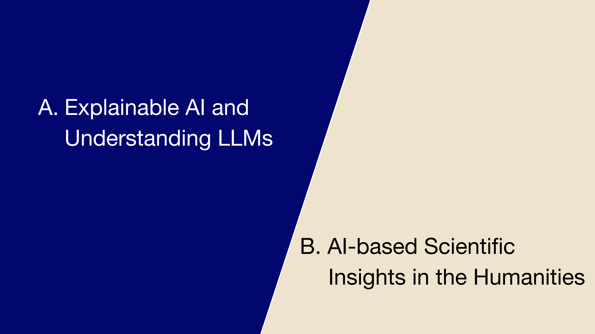
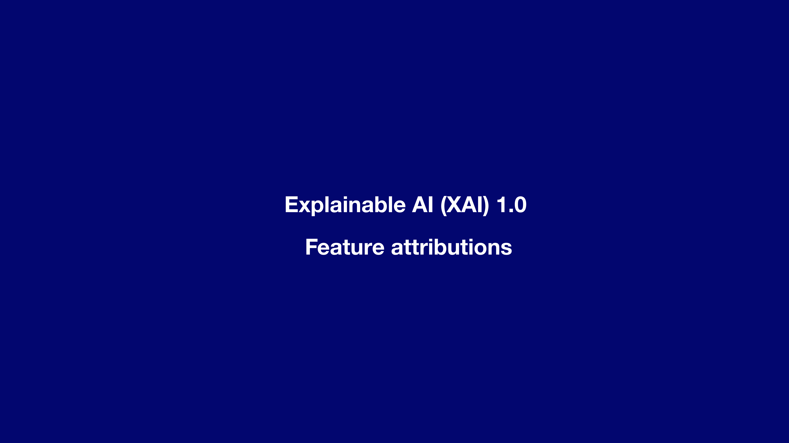
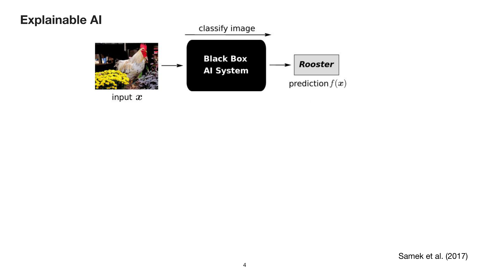
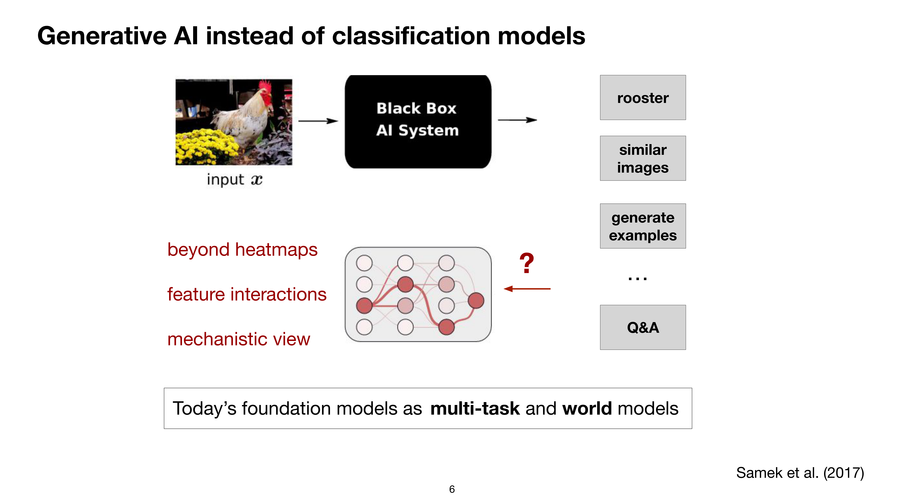
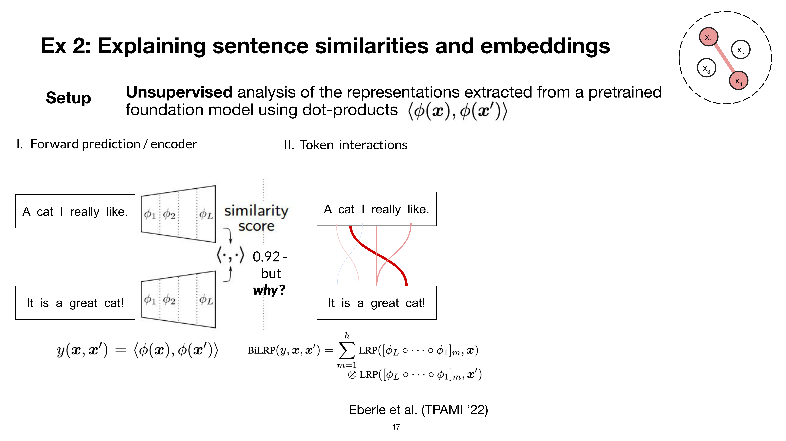
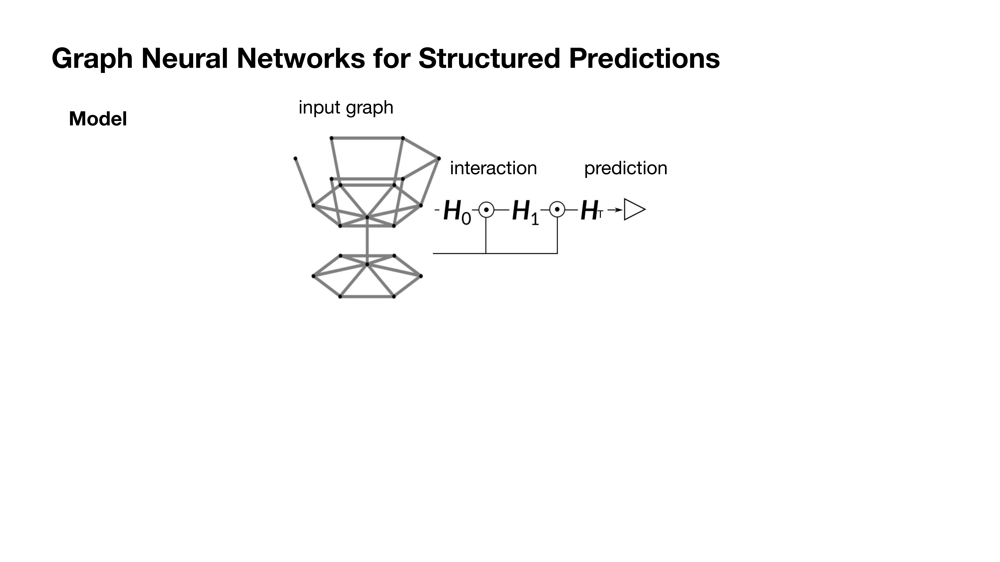
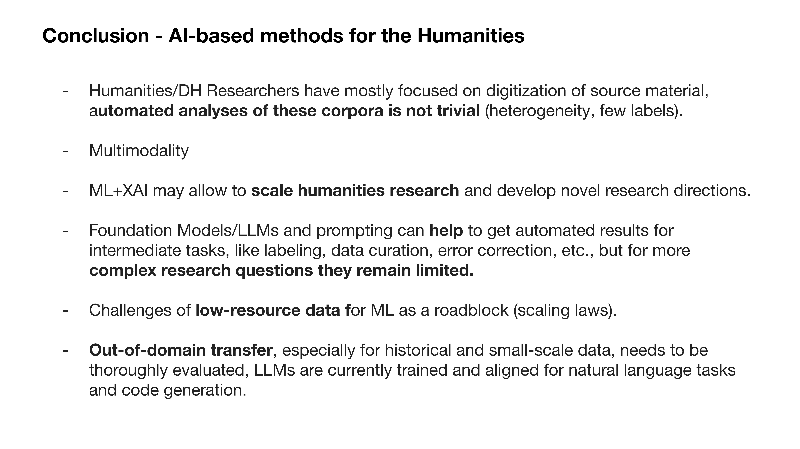

7 Interpretability for LLMs: Scientific Insights, Transparency, and Applications in the Humanities
Overview
This chapter presents a dual-pronged investigation into artificial intelligence. The authors first explore the evolution of explainable AI (XAI), before demonstrating its application in generating novel scientific insights within the humanities.
The initial part charts the progression from first-generation XAI, which relied upon heatmap-based feature attributions for simple classification models, towards a more sophisticated paradigm the authors term ‘XAI 2.0’. This advanced approach focuses on structured interpretability, analysing second-order (pairwise) and higher-order (graph-based) feature interactions. Such methods are essential for understanding the complex mechanisms of modern foundation models, including Large Language Models (LLMs). The authors demonstrate how these techniques can uncover biases in sentiment prediction, analyse how LLMs handle long-range dependencies, and reveal the surprisingly simple heuristics, such as noun matching, that models employ for tasks like sentence similarity.
The second part transitions to a series of case studies applying these AI techniques to historical research. One project involves classifying a corpus of early modern mathematical instruments, using heatmaps to derive visual definitions based on features like fine-grained scales. A more extensive project, the ‘XAI-Historian’, analyses the Sphera corpus of numerical tables from 1472–1650. By developing a specialised model for bigram detection and using XAI to verify its logic, the team could analyse historical publishing patterns at scale. A key finding emerged from a cluster entropy analysis, which identified Wittenberg as a centre of low print diversity—a data-driven discovery that corroborated historical knowledge about the political control exerted over its publishing curriculum by Protestant reformers.
7.1 Presentation Structure

The discourse is structured into two principal sections. The first part addresses the field of Explainable AI and its role in understanding the inner workings of Large Language Models. Subsequently, the second part demonstrates how these AI-driven methods can yield new scientific insights within the humanities.
7.2 Foundations of Explainable AI

The initial exploration into explainable AI, which may be termed XAI 1.0, centres on the concept of feature attribution. This approach seeks to establish a clear definition of what constitutes a model explanation within the machine learning community, providing a foundation for the more complex methods of interpretability that followed.
7.3 The ‘Black Box’ Problem

Historically, machine learning research focused predominantly on visual data, creating powerful but opaque ‘black box’ systems. These models could, for instance, correctly classify an object in an image but offered no insight into the basis for their decision. The field of explainable AI emerged to address this opacity, dedicating a decade of research to methods that trace a model’s predictions back to its inputs. A foundational technique is the heatmap, which visually highlights the input pixels most influential in a classification, thereby showing why a model recognised a rooster.
The imperative for such explainability is fourfold. It enables scholars and engineers to:
Verify that a model is functioning reasonably.
Diagnose and correct its errors.
Learn from the surprising or novel solutions that models can uncover.
Ensure compliance with emerging regulatory frameworks, including the European AI Act.
7.4 The Advent of Generative AI

The landscape of AI has shifted dramatically from the standard classification models prevalent five years ago to the current era of Generative AI. Unlike their predecessors, today’s foundation models are multi-task systems. They can classify content, retrieve similar images, generate entirely new images, and answer questions across a vast range of topics.
This expanded capability introduces a significant challenge: grounding a model’s output, such as a generated answer, in specific input data becomes far more complex. Consequently, research must now advance beyond simple heatmap representations. The focus is shifting towards analysing feature interactions and adopting more mechanistic perspectives to understand these models, which effectively act as ‘world models’ that encode societal knowledge and patterns of textual evolution.
7.5 Illustrative Model Failures

AI models are prone to making surprising and revealing errors. One well-known example involves an object classifier that incorrectly bases its identification of a boat on the surrounding water; the model learns this correlation because the water’s texture is a simpler feature to detect than the boat itself.
Another example highlights failures in multi-step planning. When a standard LLM, such as a Llama 3 model, is prompted to solve the Tower of Hanoi puzzle, it immediately violates the game’s rules by attempting to move the largest, inaccessible disk. This demonstrates a fundamental misunderstanding of the problem’s physical constraints.
7.6 A New Paradigm: Structured Interpretability
To address the limitations of earlier methods, the authors’ work introduces a new paradigm termed ‘XAI 2.0’, which champions the concept of structured interpretability. This approach aims to move beyond simple heatmap visualisations to uncover more complex, relational patterns within a model’s decision-making process. The need for such methods is underscored by failures in standard models, like the Llama 3 variant that struggled with the Tower of Hanoi, although more recent reasoning models may show improvement.
7.7 First and Second-Order Explanations

Structured interpretability distinguishes between different orders of explanation. First-order explanations, akin to heatmaps, are useful for simple classifiers. For instance, when the authors trained a model to classify historical tables, these explanations verified that the model correctly focused on numerical content to make its predictions.
Second-order explanations, however, analyse pairwise relationships between features. This becomes crucial for understanding tasks like similarity measurement. When explaining the similarity score between two images, an interaction-based method reveals the specific features that correspond. In an example with two identical tables, this approach correctly highlights the interactions between matching digits, confirming the model’s logic.
7.8 Higher-Order Interactions in Graphs

More recent work by the team extends this analysis to graph structures, such as citation networks or relationships between entities like books. In these contexts, higher-order interactions provide more meaningful explanations than simpler methods.
For models trained on graph classification tasks, explanations manifest as ‘feature walks’ or subgraphs—sets of interconnected features that become relevant only when considered collectively. The ultimate goal of this research is to derive more complex insights into model behaviour and progress towards a circuit-level understanding of their internal mechanisms.
7.9 Detecting Bias in Language Models

Applying first-order attributions to language models reveals their underlying biases. In a standard sentiment prediction task using a movie review dataset, the authors employed a heatmap-style method adapted for Transformers. The analysis showed that the model’s predictions were skewed by the names present in the text.
A review was more likely to receive a positive classification if it contained male, Western names like ‘Lee’ or ‘Raphael’. Conversely, the presence of foreign-sounding names like ‘Saddam’ or ‘Chan’ correlated with a negative score. This work demonstrates that explainable AI is a powerful tool for detecting such fine-grained, and often unintended, biases within language models.
7.10 Long-Range Dependencies in Summarisation

The authors investigated how LLMs handle long-range dependencies when summarising extensive texts, such as Wikipedia articles, within an 8,000-token context window. By tracing the generated summary back to its sources in the input, they sought to determine if the models effectively use information from the entire document.
Their analysis revealed a strong recency bias: the model predominantly focuses on information from the latter parts of the context. Although it can access information from the beginning of the text, it is significantly less likely to do so, as shown by a logarithmic scale of attribution counts. This finding implies that LLM-generated summaries are not balanced representations of the source material but are skewed towards content presented closer to the end of the prompt.
7.11 Explaining Sentence Similarity

To understand how models compute sentence similarity, the team applied second-order explanations to a standard pretrained model like Sentence-BERT. Given two sentences, the method generates interaction scores between their tokens to reveal the basis for the calculated similarity score.
The analysis of a toy example (‘A cat I really like’ and ‘It is a great cat’) and other pairs revealed that the models do not employ complex semantic reasoning. Instead, they rely on surprisingly simplistic heuristics, operating like a ‘bag-of-tokens’ system. The primary strategy is simple noun matching, supplemented by noun-verb pairings and interactions with separator tokens. This suggests that in the process of compressing vast amounts of information, these models default to simple, and perhaps not immediately obvious, decision-making strategies.
7.12 Modelling Complex Language

Graph Neural Networks (GNNs) can be conceptually framed as LLMs, as their message-passing mechanism is analogous to an LLM’s attention network. This perspective allows for the application of higher-order explanation methods to complex language phenomena.
Standard first-order, or bag-of-words, explanations often fail in this regard. For instance, in the sentence ‘First, I didn’t like the boring pictures’, such a method would incorrectly assign a positive sentiment due to the word ‘like’, completely missing the negation. In contrast, a higher-order explanation method successfully captures the complex structure. It correctly assigns a negative value to the entire negated phrase and properly interprets the sentence’s overall sentiment hierarchy, demonstrating a more nuanced understanding of language.
7.13 Case Study: Defining Historical Instruments

In a collaborative project with historians Matteo Valeriani and Jochen Büttner, the authors applied AI to a corpus of historical mathematical instruments. Their goal was to build a classifier that could distinguish between categories such as ‘machine’ and ‘mathematical instrument’.
By employing heatmap-based explanations, the team sought to extract objective ‘visual definitions’ that the model used for its classifications. This process necessitated close interaction with the domain experts to validate the meaningfulness of the AI-derived criteria. A key finding was that the model correctly identified fine-grained scales as a highly relevant and defining feature for the ‘mathematical instrument’ class.
7.14 Case Study: The Sphera Corpus

The team’s largest collaborative project with historians from the Bifold institute involved the Sphera corpus, a collection of early modern texts published between 1472 and 1650. The central challenge, brought forward by Matteo Valeriani and Jochen Büttner, was to analyse the corpus’s vast collection of numerical tables.
Despite initial assessments that the data would be extremely difficult to process computationally, the research goal was to develop an automated method for matching tables based on semantic similarity—a task that had been impossible to conduct at scale using traditional methods.
7.15 The ‘XAI-Historian’ Workflow

The authors developed a workflow to support what they term the ‘XAI-Historian’—a scholar who leverages AI and its explanations for data-driven hypothesis generation. Rather than applying a large, general foundation model, which performs poorly on such specialised, out-of-domain data, the team engineered a small, custom model.
This model was trained specifically to detect numerical bigrams within the historical tables. Crucially, they used explainable AI to verify that the model functioned as intended. By confirming that it correctly identified identical bigrams across different tables, they could trust its outputs and proceed with large-scale analysis.
7.16 Case Study: Print Diversity and Innovation

With a trusted model in place, the team conducted case studies, including an analysis of innovation diffusion using cluster entropy. They analysed the publishing output of various European cities by clustering the representations of their printed tables. By calculating the entropy of each city’s output, they could quantify its diversity; low entropy signified a programme focused on reprinting, whilst high entropy indicated a more varied and innovative output.
The analysis yielded two notable low-entropy cases. It confirmed Frankfurt am Main’s known status as a reprinting hub. More significantly, it uncovered a historical anomaly in Wittenberg. The model detected an unusually low diversity in its print programme, a finding that perfectly matched historical knowledge about the active political control exerted by Protestant reformers, who strictly managed the city’s curriculum.
7.17 Conclusion

In conclusion, this research demonstrates the successful application of bespoke AI and explainability methods to complex historical data. The work yields verifiable insights that augment traditional scholarship. Whilst the presentation concluded before detailing future challenges related to data scarcity and model capabilities, the authors’ work establishes a strong foundation for a new, computationally-assisted approach to humanities research.